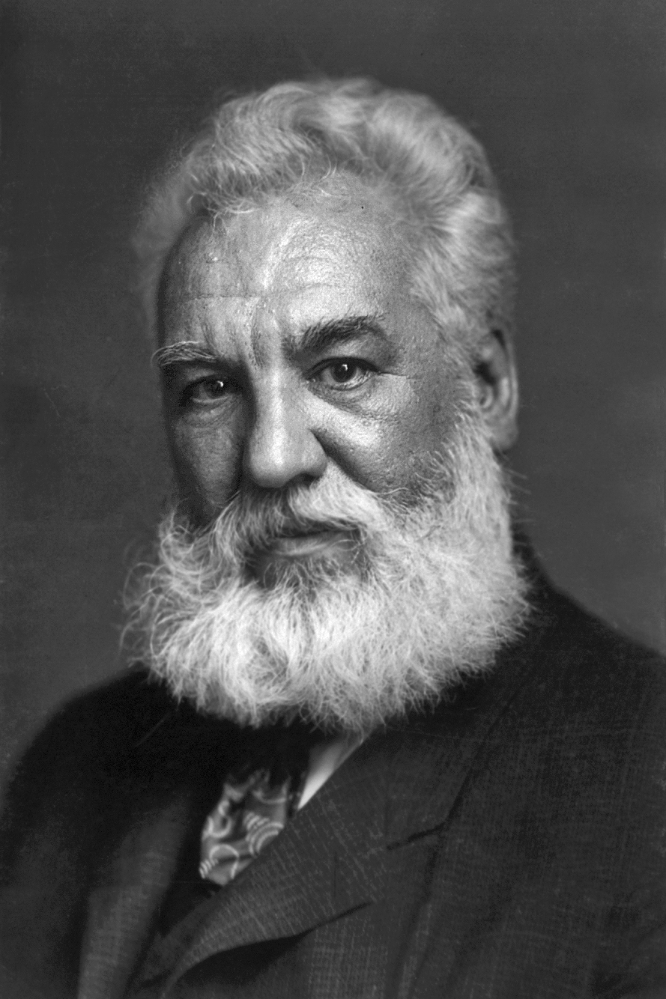
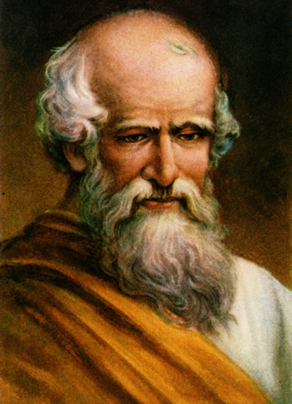
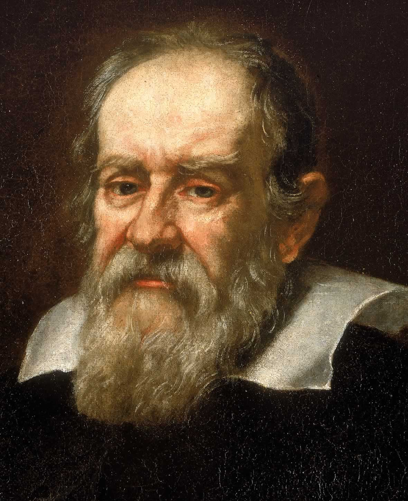

Latar Belakang
Ditulis oleh Berlian Eka pada 20 Januari 2020.
Sebelum kita masuk ke materi angka penting, sebelumnya mari kita bahas dulu apa itu fisika?
Fisika menurut KBBI adalah ilmu tentang zat dan energi seperti panas, bunyi, cahaya dan sebagainya.
Fisika menurut Hough D Young adalah suatu ilmu yang sangat dasar dari berbagai ilmu pengetahuan lain.
Fisika menurut Ensiklopedia adalah ilmu yang didalamnya mempelajari benda dan gerakannya serta manfaatnya bagi kehidupan manusia.
Berikut adalah beberapa contoh ahli fisika:
1. Albert Einstein

Albert Einstein lahir di Ulm, Kerajaan Württemberg, Kerajaan Jerman pada tanggal 14 Maret 1879 dan meninggal di Princeton, New Jersey, Amerika Serikat pada tanggal 18 April 1955. Ia adalah ilmuwan fisika terbesar dalam abad ke-20. Ia mengemukakan teori relativitas. Kata Einstein dianggap berarti kecerdasan atau genius. Untuk menghargai atas jasa-jasanya, sebuah satuan dalam fotokimia dinamai Einstein, sebuah unsure kimia dinamai einsteinium, dan sebuah asteroid dinamai 2001 Einstein. Rumus yang paling terkenal adalah E=mc².
2. Alexander Graham Bell
Alexander Graham Bell lahir di Edinburgh, Skotlandia, Inggris pada tanggal 3 Maret 1847 dan meninggal akibat komplikasi dari diabetes di Beinn Bhreagh, Nova Scotia, Kanada pada tanggal 2 Agustus 1922. Ia merupakan seorang Ilmuwan, insinyur, Profesor di Boston University, Guru orang tuli dan bahkan penemu telepon. Ia juga termasuk pekerjaan terobosan dalam telekomunikasi optik, hydrofoils dan aeronautika. Pada 1888, Ia menjadi anggota pendiri dari National Geographic Society. Ia digambarkan sebagai salah satu tokoh paling berpengaruh dalam sejarah manusia.
3. Archimedes
Archimedes lahir di Syracuse, Sisilia pada tahun c.287 SM dan meninggal pada tahun c.212 SM di Syracuse. Ia adalah seorang ahli matematika Yunani, fisika, insinyur, penemu, dan astronom. Ia menemukan Archimedes ‘prinsip, Archimedes sekrup, Claw Archimedes dan Panas Sinar.
4. Aristoteles

Aristoteles lahir di Stageira, Chalcidice pada tahun 384 SM dan meninggal pada tahun 322 SM di Euboea. Ia adalah seorang Yunani filsuf dan polymath, seorang mahasiswa dari Plato dan guru dari Alexander Agung. Tulisan-tulisan Aristoteles adalah yang pertama membuat system yang komprehensif filsafat Barat, meliputi moralitas, estetika, logika, ilmu pengetahuan, politik, dan metafisika. Meskipun Ia menulis risalah yang elegan banyak dan dialog, diperkirakan bahwa sebagian tulisan-tulisannya hilang dan hanya sekitar sepertiga dari karya asli telah bertahan.
5. Galileo Galilei
Galileo Galilei lahir di Pisa, Toscana – Italia pada tanggal 15 Februari 1564 dan meninggal pada tanggal 8 Januari 1642 di Arcetri, Toscana – Italia. Ia adalah seoarang astronom, filsuf, dan fisikawan Italia yang memiliki peran besar dalam revolusi ilmiah. Ia telah menyempurnakan teleskop, mengamati berbagai pengamatan astronomi dan juga dikenal sebagai seorang pendukung Copernicus mengenai peredaran bumi mengelilingi matahari. Galileo dianggap sebagai penyumbang terbesar bagi dunia sains modern, dan sering disebut sebagai “Bapak Astronomi Modern”, “Bapak Fisika Modern’, dan “Bapak Sains”.
Baiklah, kita sudah melewati latar belakang, selanjutnya mari kita masuk kedalam materi kita sebenarnya, yaitu Angka penting...